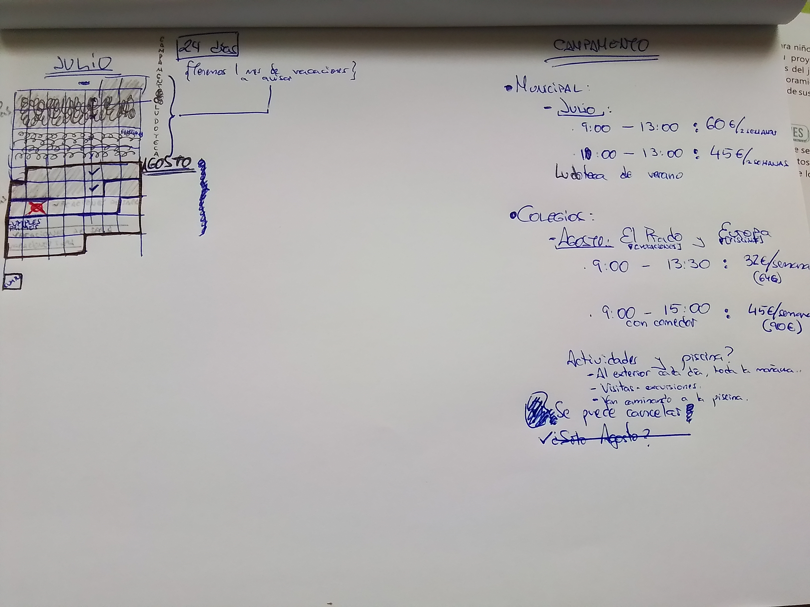
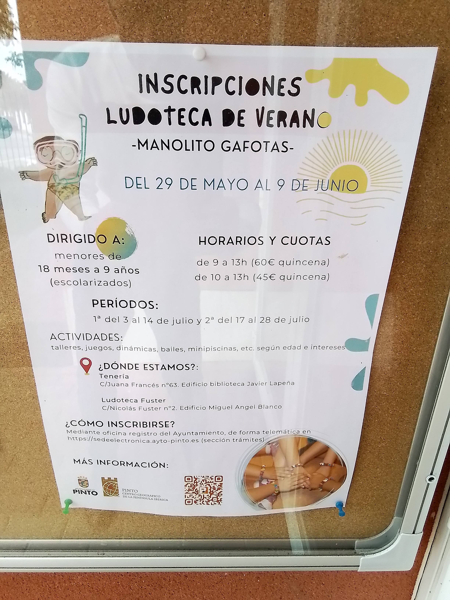

El Prado:
Emma empezará el martes 1 hasta el viernes de la siguiente semana. De 9 a 15 con comedor.
El primer día recordar que es celíaca y resolver las posibles autorizaciones.
Llevar mochilita con muda completa, bañador, toalla, chanclas y gorra que se queda semanalmente, más una mochila diaria con gorra, almuerzo y agua. La ropa diaria debe permitirle ser autónoma y los días de piscina debe llevar puesto el bañador y la crema solar. Todo marcado con su nombre.
Piscina lunes y jueves. Una excursión por semana (Valle de la Barranca y Boca del Asno). La primera semana es la aventura de Atlántida y la segunda del Museo.
